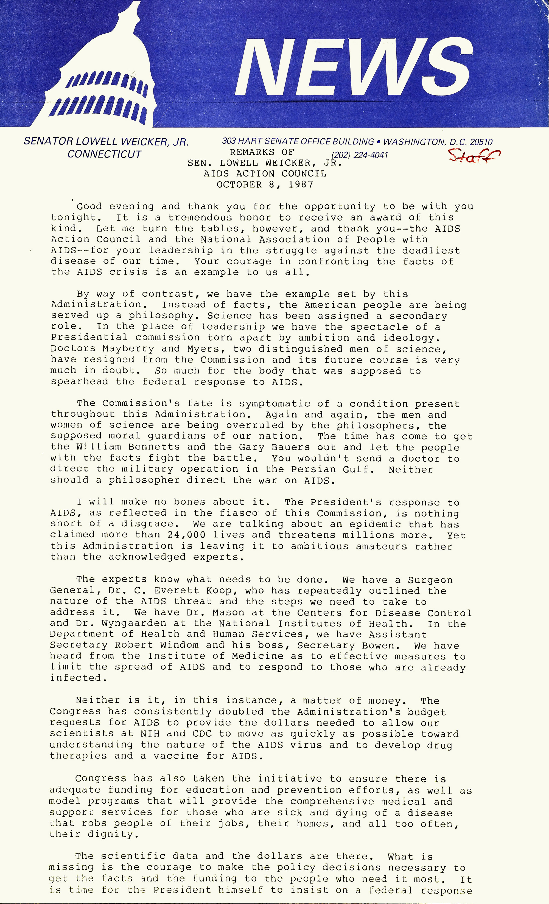

Remarks of Sen. Lowell P. Weicker, Jr. - AIDS Action Council
October 8, 1987
This press release contains Sen. Weicker’s remarks to the AIDS Action Council. Sen. Weicker commented on the state of the deadly disease and criticizes the reaction by the federal government. Senator Weicker spoke to the seriousness of the virus and the need for science to take a primary role, not a secondary role in addressing HIV/AIDS. Weicker argued that "again and again, men and women of science are being overruled by the philosophers, the supposed moral guardians of our nation." Weicker outlined those responsible for hindering an appropriate reaction to the epidemic, and those fighting in stride with Weicker's philosophy. He stipulated that "the scientific data and dollars are there. What is missing is the courage to make policy decisions necessary" to help those who need it most. Weicker heavily criticized President Reagan and his Administration for "wallowing" in ignorance. Weicker outlined a timeline of the epidemic and compares the US to other countries as well. In his final remarks, Weicker proclaimed that "those who seek to use this crisis to divide our nation must be silenced" and pledges to continue his commitment to eradicating the deadly disease.
This speech is yet another example of Weicker's commitment to fighting for all Americans and leading the country to fund AIDS research and implement education about the HIV/AIDS virus.
SOURCE: Snider Box 34.
